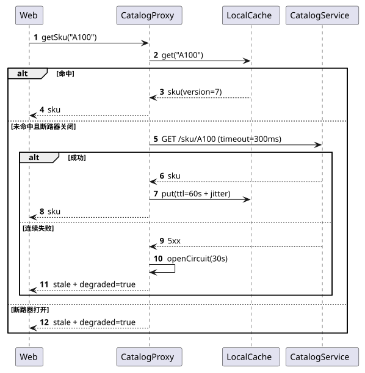

打开相册时，一屏几十张图，如果每张都立刻读磁盘，滚动会卡。代理站在真实图片前面：第一次访问才加载，之后命中缓存直接返回。调用方以为自己在用图片，其实先经过代理。
坏写法是调用方自己管缓存：
if (!img->loaded) load_from_disk(img);
use(img->pixels);每个用到图片的地方都要重复这段判断；忘了置 loaded 就重复读盘。
代理把“加载 + 缓存”收进 get()：内部持有真实对象，未加载时转下去，加载后直接返回像素数。调用方只调 get()。
左边是界面，中间是代理，右边是真实图片。
C 版代理是一个持有真实图片结构体的包装；C++ 版代理持有 unique_ptr<Image>，对调用方实现同一接口。
/* 代理 · 图片懒加载
* gcc -std=c11 -Wall -Wextra proxy.c -o proxy
*/
#include <stdio.h>
#include <string.h>
typedef struct {
char name[32];
int loaded;
int pixels;
} image_t;
static int real_load(image_t *img)
{
if (!img->loaded) {
img->pixels = 1920 * 1080;
img->loaded = 1;
printf(" 真正读取磁盘：%s\n", img->name);
}
return img->pixels;
}
typedef struct {
image_t real;
int cached_pixels;
int has_cache;
} proxy_t;
static int proxy_get(proxy_t *p)
{
printf("proxy_get(%s)：", p->real.name);
if (p->has_cache) {
printf("命中缓存，不碰磁盘\n");
return p->cached_pixels;
}
printf("未命中，转给真实对象\n");
p->cached_pixels = real_load(&p->real);
p->has_cache = 1;
return p->cached_pixels;
}
int main(void)
{
proxy_t p = { { "photo.jpg", 0, 0 }, 0, 0 };
proxy_get(&p);
proxy_get(&p);
proxy_get(&p);
printf("三次读取，只加载了一次\n");
return 0;
}proxy_get(photo.jpg)：未命中，转给真实对象 真正读取磁盘：photo.jpg proxy_get(photo.jpg)：命中缓存，不碰磁盘 proxy_get(photo.jpg)：命中缓存，不碰磁盘 三次读取，只加载了一次
// 代理 · 图片懒加载
// g++ -std=c++17 -Wall -Wextra proxy.cpp -o proxy_cpp
#include <cstdio>
#include <string>
class Image {
public:
virtual ~Image() = default;
virtual const std::string& name() const { return name_; }
virtual int pixels() {
if (!loaded_) {
loaded_ = true;
std::printf(" 真正读取磁盘：%s\n", name_.c_str());
}
return 1920 * 1080;
}
protected:
explicit Image(std::string name) : name_(std::move(name)) {}
std::string name_;
bool loaded_ = false;
};
class RealImage final : public Image {
public:
explicit RealImage(std::string name) : Image(std::move(name)) {}
};
class ImageProxy {
public:
explicit ImageProxy(std::string name) : real_(std::move(name)) {}
int pixels() {
std::printf("proxy_get(%s)：", real_.name().c_str());
if (hasCache_) { std::puts("命中缓存，不碰磁盘"); return cached_; }
std::puts("未命中，转给真实对象");
cached_ = real_.pixels();
hasCache_ = true;
return cached_;
}
private:
RealImage real_;
int cached_ = 0;
bool hasCache_ = false;
};
int main()
{
ImageProxy p("photo.jpg");
p.pixels(); p.pixels(); p.pixels();
std::puts("三次读取，只加载了一次");
return 0;
}proxy_get(photo.jpg)：未命中，转给真实对象 真正读取磁盘：photo.jpg proxy_get(photo.jpg)：命中缓存，不碰磁盘 proxy_get(photo.jpg)：命中缓存，不碰磁盘 三次读取，只加载了一次
| 角色 | C 版 | C++ 版 | 差别意味着什么 |
|---|---|---|---|
| 代理形态 | 包装结构 + 缓存字段 | 代理类 + 真实对象指针 | C 显式组合，C++ 可多态 |
| 对外接口 | proxy_get() | get() 虚函数 | 调用方无感 |
| 缓存位置 | 真实图片结构体里的 loaded/pixels | 代理或真实对象内部 | 只要只有一处写就行 |
| 线程安全 | 示例单线程 | 示例单线程 | 多线程要加锁，避免重复加载 |
参考教程：refactoringguru.cn
生产实例：商品目录远程服务代理（缓存 + 熔断）
商品目录是独立微服务，首页每秒几千次查询。直接调用会让下游抖动直接传到前端。代理站在真实客户端前面：先查本地缓存，未命中再走远程；连续失败触发熔断，返回上一次的 stale 数据。调用方仍然只调 getSku()。
degraded=true。
@startuml
autonumber
participant "Web" as W
participant "CatalogProxy" as P
participant "LocalCache" as L
participant "CatalogService" as S
W -> P: getSku("A100")
P -> L: get("A100")
alt 命中
L --> P: sku(version=7)
P --> W: sku
else 未命中且断路器关闭
P -> S: GET /sku/A100 (timeout=300ms)
alt 成功
S --> P: sku
P -> L: put(ttl=60s + jitter)
P --> W: sku
else 连续失败
S --> P: 5xx
P -> P: openCircuit(30s)
P --> W: stale + degraded=true
end
else 断路器打开
P --> W: stale + degraded=true
end
@enduml